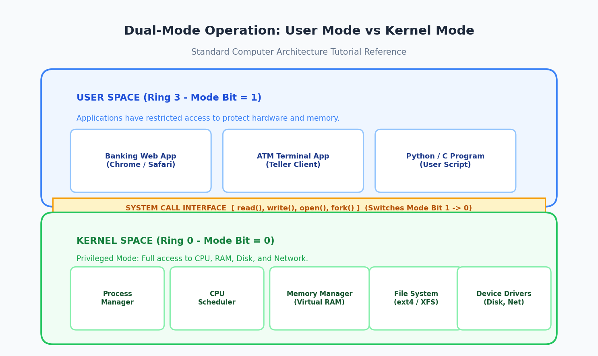

01
Core Foundation
OS Architecture & Kernel Modes
Dual-Mode Operation, System Calls & Banking Stacks
Mode Bit = 1: User Space (Safe & Restricted)
Mode Bit = 0: Kernel Space (Privileged Ring 0)
System Call: Safe bridge asking OS for hardware
Enterprise Stack: RHEL Linux & IBM AIX at India EXIM Bank

1.1 What is an Operating System & Why Dual-Mode?
Simple ConceptAn Operating System (OS) is like the manager of a bank. It sits between software applications (like a banking portal) and physical hardware (CPU, RAM, Hard Disk). Without the OS, any program could accidentally overwrite another program's data.
Real-World Analogy: Airport Security Gate
Normal passengers stay in the public terminal (User Space). Only authorized staff with security badges can enter the air traffic control room (Kernel Space). If a passenger wants luggage loaded, they must ask the gate agent (System Call), who performs the task safely.
Modern CPUs enforce this with a special hardware flag called the Mode Bit:
- User Mode (Mode Bit = 1): Restricted mode. Banking apps run here. They cannot directly touch the CPU or physical memory.
- Kernel Mode (Mode Bit = 0): Privileged mode. The core OS runs here with complete access to all hardware.
c_syscall_example.c
// A banking program asking the OS to read from storage #include <unistd.h> #include <fcntl.h> int fd = open("/bank/ledger.dat", O_RDONLY); char buffer[1024]; // read() is a System Call: Switches Mode Bit from 1 (User) to 0 (Kernel) ssize_t bytes_read = read(fd, buffer, sizeof(buffer));
Output:
[Kernel] Trap 0x80 handled. Switching Mode Bit 1 -> 0
[Kernel] Reading 1024 bytes from NVMe Disk into buffer.
[Kernel] Switching Mode Bit 0 -> 1. Returning to User App.
[User App] Ledger data loaded successfully into memory.
Pro Tip: If an application crashes due to a bug (like dividing by zero), the operating system terminates only that single application. Because the app runs in User Mode, the core computer and other banking services keep running safely.
Knowledge Check 1
Look at the explanation above. What happens when a banking app executes a System Call like read()?
Correct Answer: Option B
System calls generate a software interrupt (trap) that temporarily switches CPU privilege from User Mode (1) to Kernel Mode (0). Once the kernel safely finishes reading the data from the disk, it restores Mode Bit 1 and returns control to the app.